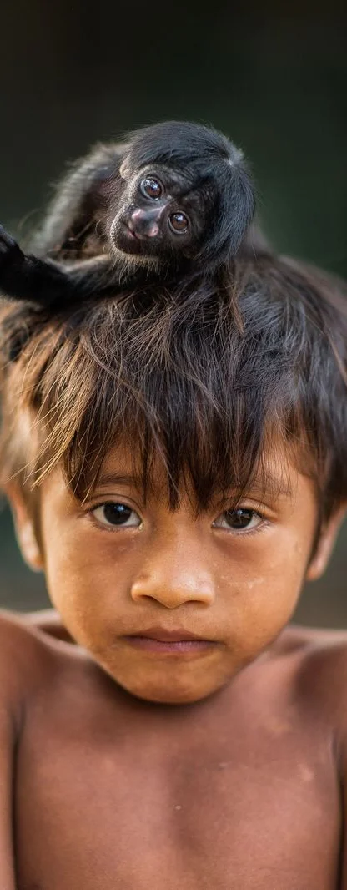

Donación
Al igual que tú, en la FPV somos personas que buscamos ayudar a los más necesitados en los lugares más remotos.
Nuestra meta es entregar medicamentos, llevar personal sanitario y trasladar pacientes en emergencia diariamente a través de un puente aéreo.
Sin el generoso apoyo que nos brindan, no podríamos hacer que las personas más vulnerables tengan oportunidad de vivir, volamos por la vida.
¡Toma la decisión y dona ahora para ayudarnos a ayudar! Tu porte dará esperanza a las poblaciones más aisladas y olvidadas de nuestra región.
¡Contactanos para enterarte de cómo nos puedes ayudar!

¿Cómo será usada su donación
Con la recaudación, podemos apoyar a pueblos indígenas del Amazona venezolano y comunidades en situación de emergencia.
Su donación se destina directamente al apoyo aéreo y el trabajo de primera línea realizado por nuestros pilotos, desde Caracas al sur de Venezuela, marcando una diferencia vital en la vida diaria de las personas.
La información detallada y específica de cómo han sido invertidos los aportes en las misiones de vuelo podrá verlo en nuestro documento financiero anual.